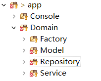

Laravel框架下使用领域驱动模型设计
领域驱动的模型设计帮助我们使用面向对象的编程范式以及设计模式等技术，从而确保程序的稳定性以及可扩展性。本文对在Laravel下使用领域驱动模型设计的几个关键点进行初步总结。
目录结构

工厂方法(Factory Method)
工厂方法把从数据库获取的信息转化成领域模型对象，进行业务逻辑的处理。
namespace App\Domain\Factory;
class ModelFactory {
public static function make(string $cls, array $data, array $map=[]):object
{
$obj = new $cls();
foreach ($data as $k=>$v) {
$k = self::toCamelcase($k);
$setter = 'set'.ucfirst($k);
if (method_exists($obj, $setter)) {
$obj->$setter($v);
}
}
foreach ($map as $field=>$vk) {
$setter = 'set'.ucfirst($field);
if (method_exists($obj, $setter)) {
$obj->$setter($data[$vk]);
}
}
if (\method_exists($obj, 'postCreation')) {
$obj->postCreation();
}
return $obj;
}
protected static function toCamelcase(string $str):string
{
$w = explode('_', $str);
$r = '';
foreach ($w as $m) {
$r .= ucFirst($m);
}
return $r;
}
}仓库(Repository)
使用Eloquent Model作为DDD的仓库，这样可以充分利用Laravel框架的代码
-
数据库字段名为
field_name，而领域模型的字段名为fieldName，另外还有setFieldName以及getFieldName方法 -
处理完业务逻辑把数据存储到数据库的时候需要把领域模型转化成
Eloquent Model -
从仓库取出数据以后需要使用上面的工厂方法把它们转化成领域模型对象处理领域逻辑。
abstract class AbstractRepository extends Model { /** * Save order to db */ protected function saveIt(ModelInterface $modelObj):void { $old = $this->find($modelObj->getId()); $obj = $old ? $old : $this; $obj = $this->setValue($obj, $modelObj); $obj->save(); } protected function setValue(Model $target, ModelInterface $source):Model { $fields = DB::connection()->getSchemaBuilder()->getColumnListing($target->getTable()); foreach ($fields as $field) { $getter = 'get'.ucfirst(self::toCamelcase($field)); if (\method_exists($source, $getter)) { if ($source->$getter()) $target->$field = $source->$getter(); } } return $target; } protected static function toCamelcase(string $str):string { $w = explode('_', $str); $r = ''; foreach ($w as $m) { $r .= ucFirst($m); } return $r; } }